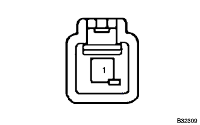
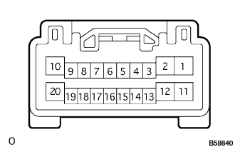

| NG |
| フロントドア カーテシランプ スイッチASSY交換 |
パワーウインドウシステム キーOFF後作動できない |
| 手順1 | フロントドア カーテシランプ スイッチASSY単体点検 |
|  |
SST(トヨタエレクトリカルテスター)を使用して、1端子←→ボデーアース間の導通を点検する。
| 端子番号 | 測定条件 | 基準 |
|---|---|---|
| 1←→ボデーアース | シャフトを押し込まないとき | 導通あり |
| 1←→ボデーアース | シャフトを押し込んだとき | 導通なし |
|
| ||||
| OK | |
| 手順2 | ワイヤハーネスまたはコネクター点検 |
マルチプレツクスネツトワークマスタスイツチのコネクタを切り離す。
|  |
SST(トヨタエレクトリカルテスター)を使用して、マルチプレツクスネツトワークマスタスイツチの車両側コネクタ端子間の電圧を点検する。
| 端子番号(端子名) | 項目 | 測定条件 | 基準 |
|---|---|---|---|
| 17(DTCY)←→2(GND) | 電圧 | 運転席ドア全閉→開 | 10-14V→0V |
|
| ||||
| OK | ||
| ||